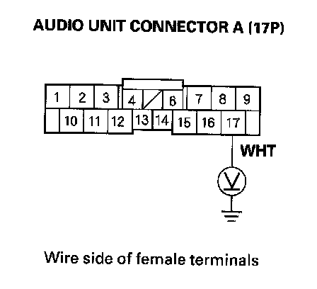
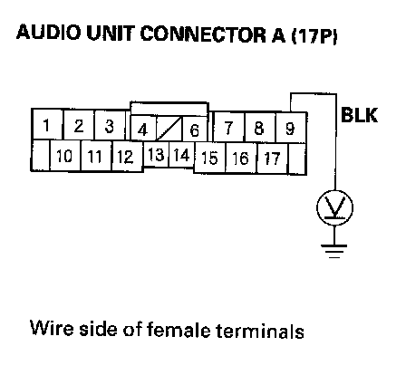

Radio Preset Memory Is Lost
Radio preset memory is lostNOTE: If only XM stations are lost, go to XM radio preset memory is lost.
1. Set each of the radio station preset buttons.
Do each of the buttons set properly?
YES - Go to step 2.
NO - Go to step 4.
2. Turn the ignition switch OFF for 1 minute, then turn it back to ON (II).
3. Test the preset buttons for proper recall operation.
Do the preset buttons recall the set radio stations?
YES - System is normal at this time. Check the connections at the navigation unit or audio unit.
NO - Go to step 4.
4. Inspect the under-dash fuse/relay box No. 23 (10A) fuse.
Is it OK?
YES - Go to step 5.
NO - Replace the fuse and reset. If it fails again, repair the short to the ground in the harness.
5. Remove the navigation unit or audio unit.
6. Turn the ignition switch ON (II).

7. Measure the voltage between the audio unit connector A (17P) No. 17 and body ground.
Is there battery voltage?
YES - Go to step 8.
NO - Repair open wire between the under-dash fuse/relay box and audio unit A10 terminal.

8. Measure the voltage between the audio unit connector A (17P) No.9 and body ground.
Is there less than 0.1 V?
YES
- With navigation: Replace the navigation unit.
- Without navigation: Replace the audio unit.
NO - Repair open wire between the navigation unit or audio unit connector A (17P) terminal No.9 and body ground (G505).